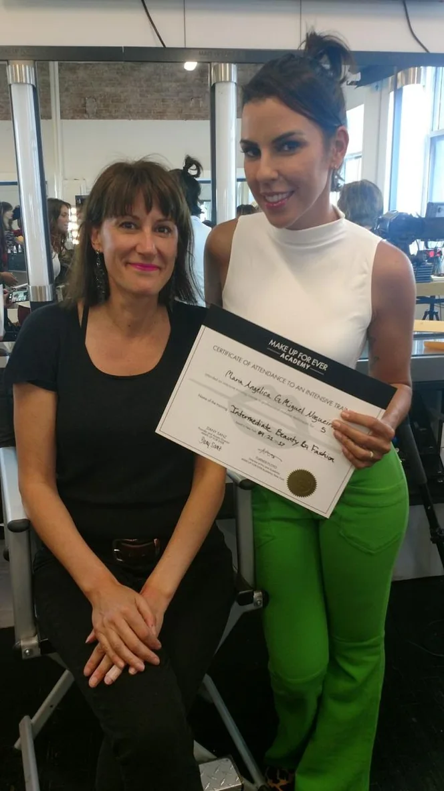
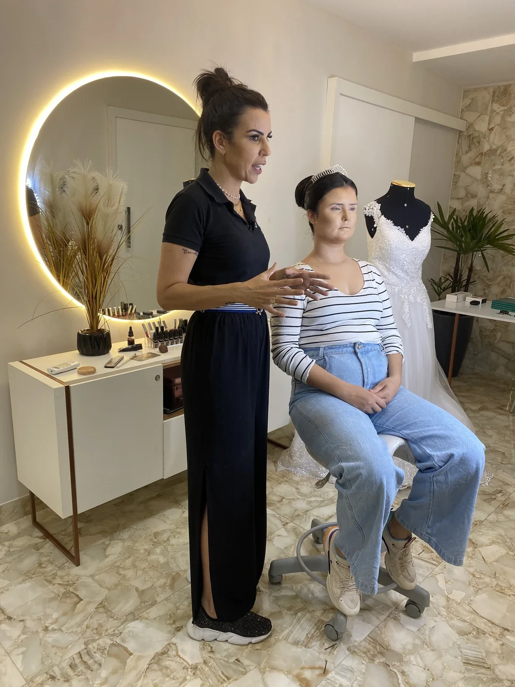
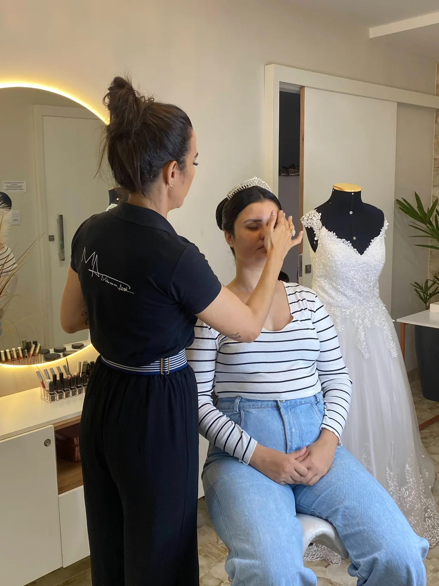
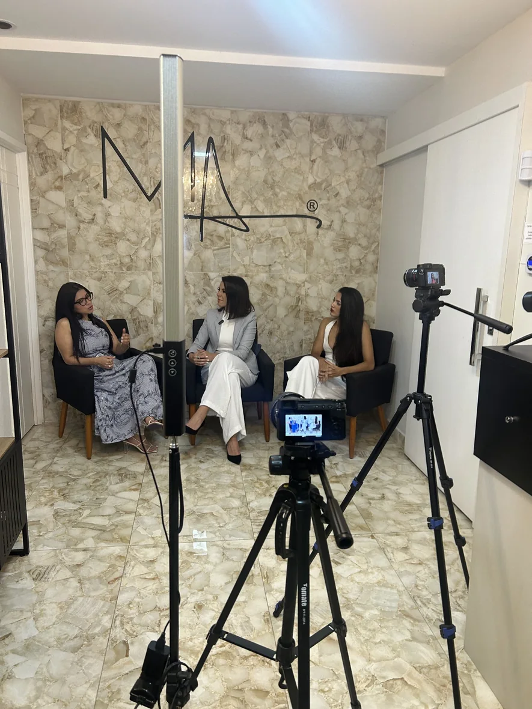

Atender no improviso
Chega de pensar no que falar com a cliente esperando. Você terá a conversa pronta para cada momento do atendimento.
Dê a ela um motivo para voltar. Conheça os Protocolos de Atendimento 3X: o passo a passo de pré-atendimento, atendimento e pós-atendimento para profissionais autônomas de estética e saúde.
Quero conduzir meus atendimentos →Por apenas R$ 47,97 · 7 dias de garantia · À vista, Pix ou cartãoChega de pensar no que falar com a cliente esperando. Você terá a conversa pronta para cada momento do atendimento.
Aprenda o que dizer na primeira mensagem para a cliente sentir cuidado antes mesmo de ouvir o preço.
Mesmo que atenda em casa ou garagem, aprenda a preparar o espaço para a cliente se sentir muito bem recebida.
Saiba como acompanhar a cliente depois do serviço de forma profissional, sem forçar a barra e sem parecer insistente.
Escreva de um jeito que mostre que você é organizada e segura, sem precisar justificar o seu preço.
Registre as preferências de cada uma e use isso para tornar cada atendimento muito mais pessoal e inesquecível.
Você baixa um pacote de mensagens, copia, cola e espera a cliente voltar. Ela não volta, e você conclui que o problema é você. No Protocolos 3X, você domina a jornada completa:
Aprenda o que falar antes de passar o valor, para a cliente sentir cuidado antes de ouvir o preço.
Prepare o ambiente e conduza o atendimento para a cliente se sentir confortável, segura e especial.
Vai além de perguntar se gostou. Saiba como fazer um acompanhamento profissional e registrar preferências.
12 videoaulas completas e materiais complementares adaptáveis ao seu nicho de estética ou saúde.
1 módulo completo com 12 aulas práticas, sem mistério, direto ao ponto e com acesso imediato.
ACESSO IMEDIATOModelos de mensagens de cada etapa para copiar, adaptar à sua voz e colar no WhatsApp.
MENSAGENS EDITÁVEISChecklist completo de rotina para você acompanhar o seu andamento do pré ao pós-atendimento.
ROTINA ORGANIZADAA parte mais importante: cadastre as preferências de cada cliente e melhore cada atendimento.
FIDELIZAÇÃO
“Eu sou a Angélica Nogueira. Estou há mais de 10 anos na área. Tenho uma clínica de estética de alto padrão e um coworking com mais de 20 salas para profissionais de saúde e estética.
Sou palestrante, já treinei equipes e fiz treinamentos presenciais na Makeup Forever (Nova York), na Kryolan (Argentina) e na Sephora (Las Vegas).
Quando abri o meu negócio, o meu trabalho era impecável, mas a agenda não lotava e o faturamento não saía do lugar. Foi aí que eu comecei a estudar como encantar a cliente logo de cara.”
“Hoje eu uso esses protocolos na minha clínica e no meu coworking. Agora eles estão aqui para você.”Quero conduzir meus atendimentos →
O MÉTODO FORA DOS SLIDES
Atendimento, organização, aperfeiçoamento e encontros que fazem parte da trajetória da criadora.




Deslize para o lado ou use as setas para ver mais fotos.
Um curso de atendimento no mercado costuma custar R$ 197,97. O Protocolos de Atendimento 3X é o preço de porta de entrada: apenas R$ 47,97 para você comprar e usar de imediato.
Por apenas R$ 47,97 · À vista no Pix ou parcelado no cartão
Quero conduzir meus atendimentos →7 dias de garantia incondicional · Checkout seguro KiwifySão as três etapas da jornada da cliente: pré-atendimento, atendimento e pós-atendimento.
Foi feito para quem atende sozinha: maquiadora, cabeleireira, manicure, esteticista, massagista, designer de sobrancelha, depiladora e profissional de laser. Os materiais são adaptáveis ao seu nicho.
Não. Você usa o seu WhatsApp e a sua própria voz.
Não. Ele organiza a sua conversa com a cliente, antes, durante e depois do atendimento.
Você tem 7 dias de garantia. Se não for para você, é só pedir o reembolso em até 7 dias.
O acesso às 12 aulas e aos materiais é imediato depois da compra.